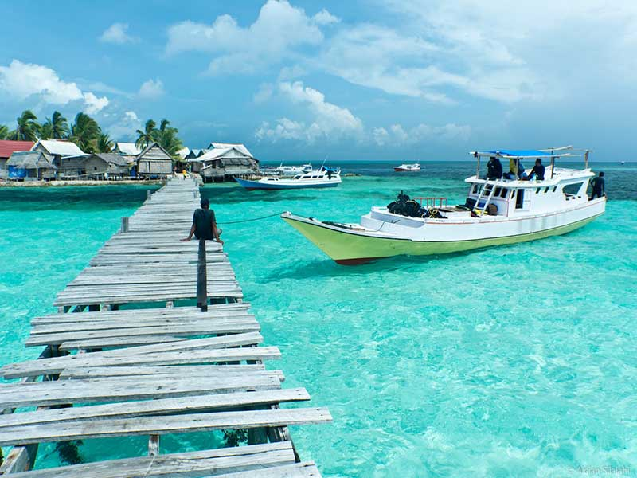
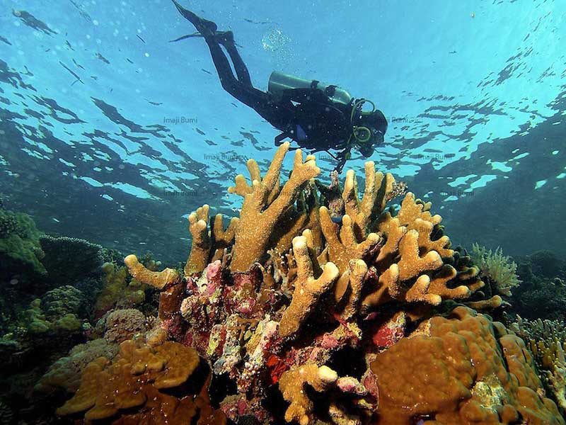

aman Nasional Taka Bonerate merupakan sebuah taman laut yang memiliki gugusan terumbu karang berbentuk cincin, pulau atau Oleh karena itu Taman Nasional Taka Bonerate termasuk kawasan atol terbesar ketiga di dunia, setelah Kwajifein di Kepulauan Marshall dan Suvadiva di Kepulauan Maladewa. Luas kawasan atol yang ada di TN. Taka Bonerate sekitar 220.000 ha, dan telah diajukan menjadi situs warisan dunia sejak tahun 2005 lalu. Taman Nasional Taka Bonerate sendiri memiliki 17 pulau, 7 pulau merupakan pulau berpenghuni sedangkan 10 pulau lainnya merupakan kawasan konservasi.
Keseruan yang dinanti para pengunjung yang datang ke Taman nasional Taka Bonerate ialah bermain bersama Baby Shark atau bayi hiu. Kamu akan dikelilingi oleh bayi-bayi ikan hiu yang berenang mengitarimu, keadaan tersebut hanya dapat kamu rasakan ketika berada di Pulau Tinabo. Pulau Tinabo merupakan salah satu pulau tak berpenghuni dan termasuk dalam zona inti Taman Nasional Taka Bonerate. Bayi-bayi ikan hiu yang ada di bibir pantai Pulau Tinabo tersebut berjenis Black Tip yang ramah manusia, jadi kamu ngga perlu takut jika mereka mendekat dan berenang di dekatmu. Meski begitu kamu harus tetap waspada akan kemungkinan yang bisa saja terjadi. Bermain bersama baby shark ini hanya dapat kamu nikmati di Pulau Tinabo saja, dan tak akan pernah kamu dapati di belahan bumi manapun.
Akses menuju Taman Nasional Taka Bonerate dapat dilalui dengan menggunakan jalur udara maupun jalur darat. Jika menggunakan jalur udara ketika tiba di Bandara Sultan Hasanuddin dilanjutkan dengan menuju Bandara H. Aeroppala Selayar. Bandara H. Aeroppala Selayar merupakan gerbang udara menuju Taman Nasional Taka Bonerate, dengan waktu tempuh sekitar 35 menit. Untuk kamu yang memilih melalui jalur darat ketika tiba di Bandara Sultan Hasanudin, dapat menuju terminal Bus Mallengkeri untuk menuju Pelabuhan Bira. Kemudian dilanjutkan menyebrangi lautan dengan menggunakan Kapal Feri menuju Pelabuhan Pamatata, Selayar. Dan dilanjutkan dengan menuju Kota Benteng.